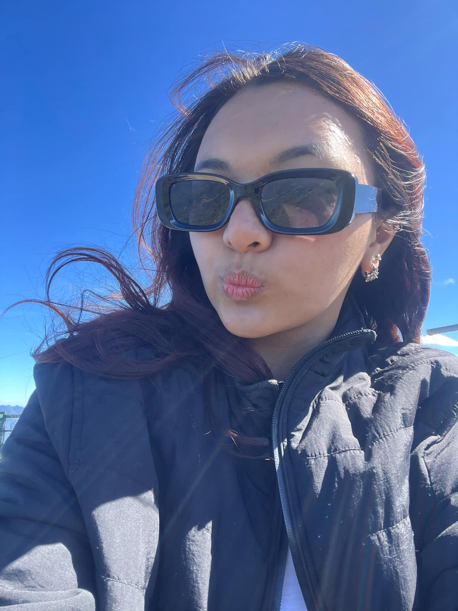

Zarah Bacani Godio
Hello! My name is Zarah Bacani Godio. I'm from Baguio City, Philippines. I am currently pursuing a career in Information Technology with a major in ERP. Here are some things about me:
Age
I am 20 years old.
Hobbies
- Watching Korean dramas and taking care of my niece in my free time.
- Trying new things and hobbies, conquering my fears, and being adventurous.
- Exploring; I love both mountains and beaches, as well as sunsets and sunrises.
Interests
One interesting thing about me is that I can enjoy both being alone and being in the company of others. As I get older, I don’t want to waste my 20s being stuck at home. I want to live my life with no regrets.